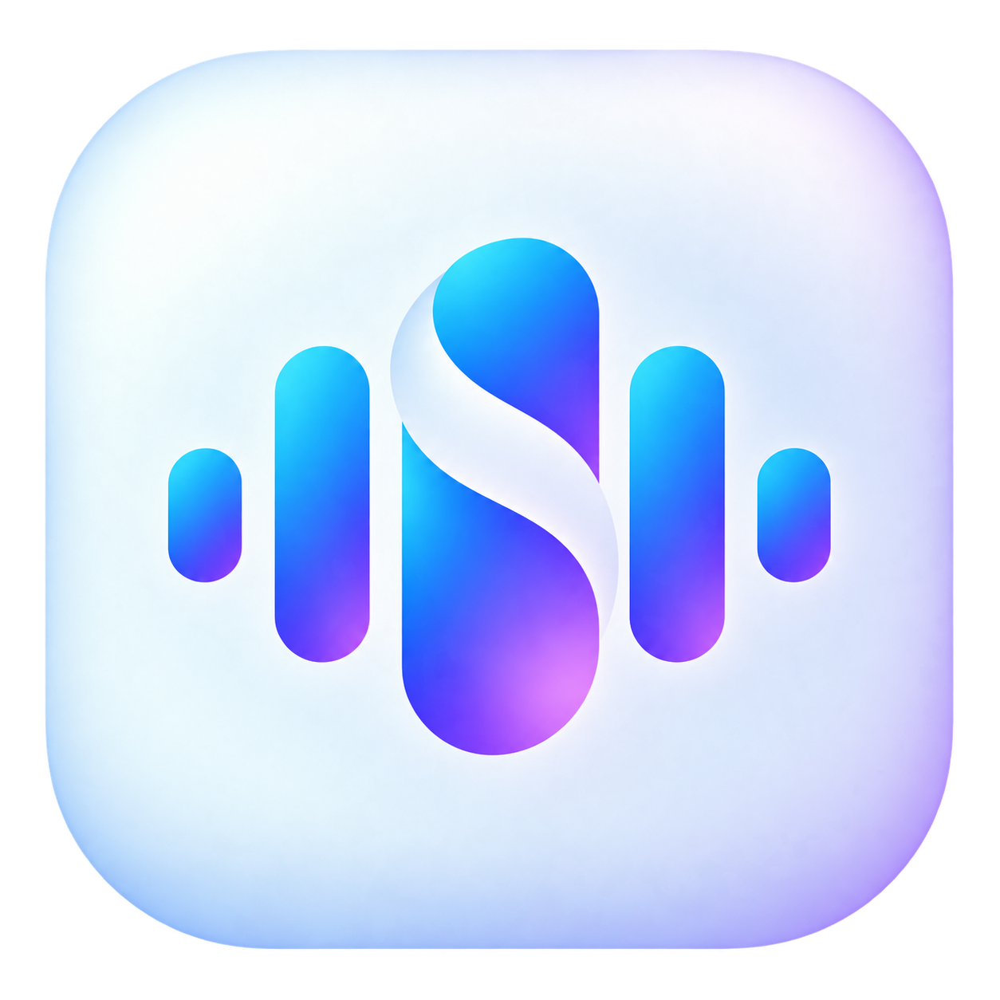

Scribe
Record. Import. Transcribe.
Privately on your computer.
Scribe is a local-first desktop app for recording audio, importing files, and creating synchronized transcripts with local Whisper models. Your recordings and transcripts stay on your device.
Download for macOS
macOS may ask you to confirm Scribe the first time you open it.
First time opening Scribe?
- Download Scribe and move it to Applications.
- Try to open Scribe once.
- If macOS shows “Scribe Not Opened”, click Done.
- Open System Settings → Privacy & Security.
- Scroll down and click “Open Anyway” next to Scribe.
- Confirm by clicking “Open”.
- After this, Scribe can be opened normally.
Scribe is currently distributed independently and is not Apple-notarized. macOS therefore asks for an extra confirmation the first time you open it.
Future Scribe updates are cryptographically signed and verified by the app before installation.
Scribe v0.1 is an early test release. Your operating system may ask you to confirm the app the first time you open it.